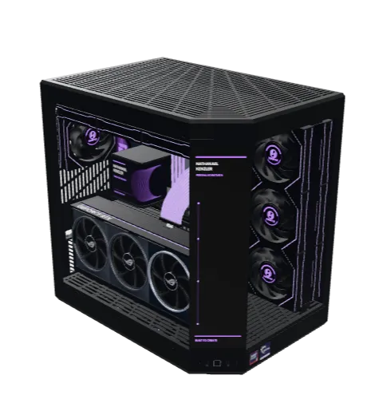

Uses and Skills
The tools behind the work.
This page is becoming a practical tour of the hardware, software, and workflows I use to learn, build, and ship. It will collect the tools behind my day-to-day work, technical learning, and personal projects.
While I put the rest together, take a look inside my PC. I built it by hand in fall 2025, then designed a 3D version of it in Blender.
It's the machine behind Olympus, the personal AI system I'm developing and hosting on my own network. I think the next stage of tech belongs to people who own their setup, hardware and software, so this is where I'm starting. It will keep growing as I do.
More stories like this, plus details on my personal stack and workflows, are on the way.

A preview of my personal workstation.
- Processor
- AMD Ryzen 9 9950X3D
- Graphics
- ASUS ROG Astral RTX 5080
- Memory
- G.Skill Trident Z5 Royal Neo DDR5
- Motherboard
- ASUS ROG Crosshair X870E Hero
- Cooling
- TRYX 360mm liquid cooler, Lian Li fans in push-pull
- Case
- HYTE Y70